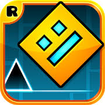

страница об игре geometrydash
Я очень часто играю в Geometry dash я прошел все официальные уровни кроме Deadlocked
Geometry Dash — компьютерная игра, соединяющая жанры 2D-платформера и ритм-игры, выпущенная изначально для мобильных устройств на iOS/Android, позже и для ПК. Создатель игры — шведский разработчик Роберт Топала, выступающий под псевдонимом RobTop. Игровой процесс заключается в прохождении уровня со множеством препятствий под ритмичную музыку. Помимо этого в игре можно создавать собственные уровни и выкладывать их на сервера, из-за чего вокруг игры сложилось активное сообщество фанатов[4][5]. 20 декабря 2023 года на персональные компьютеры и мобильные устройства вышло обновление 2.2, в которое был добавлен новый уровень и два новых игровых режима, а также другие улучшения, в том числе для встроенного редактора уровней. Обновление вызвало заметный скачок популярности Geometry Dash среди игроков в Steam[6].
Видео про игру майнкрафт
Саундтрек песни FingerDash
Офис RobTop Games